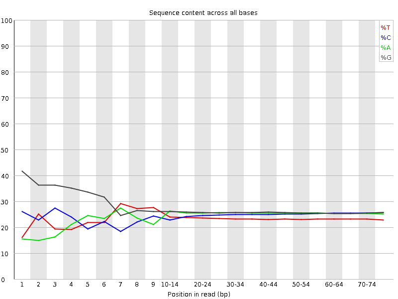
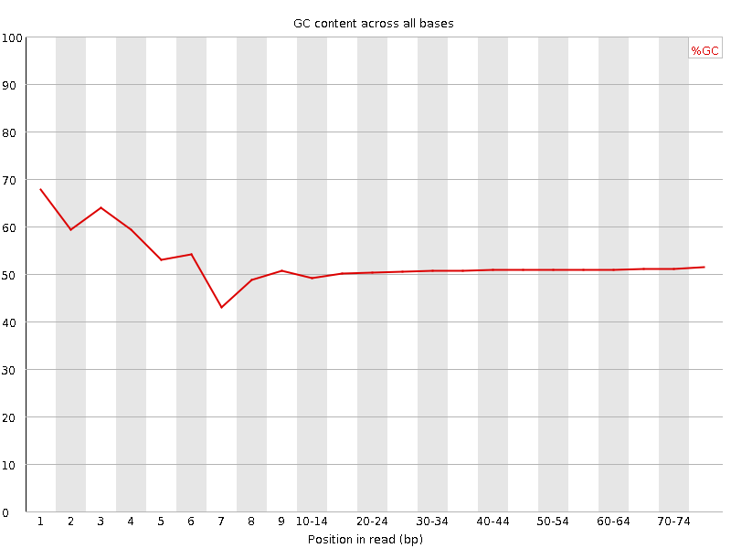
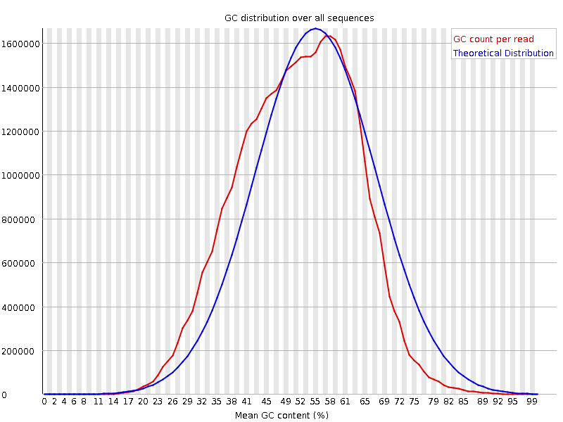
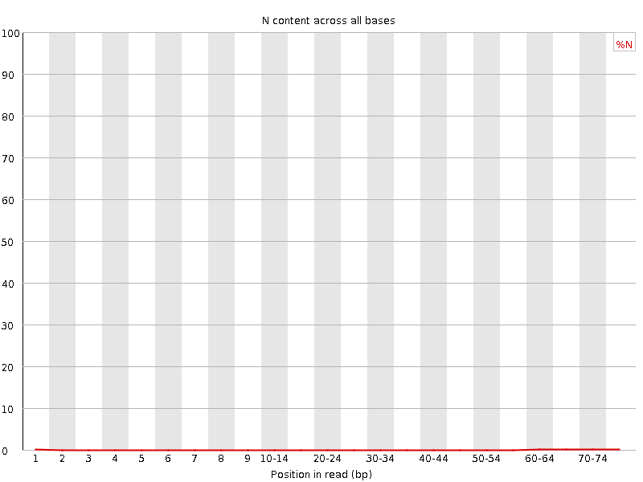
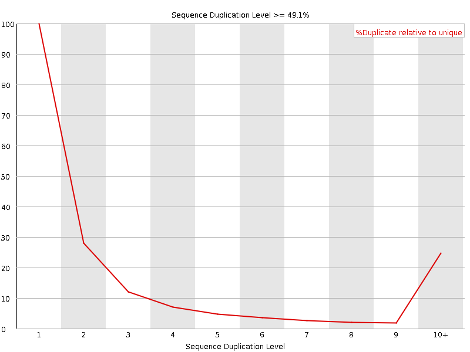
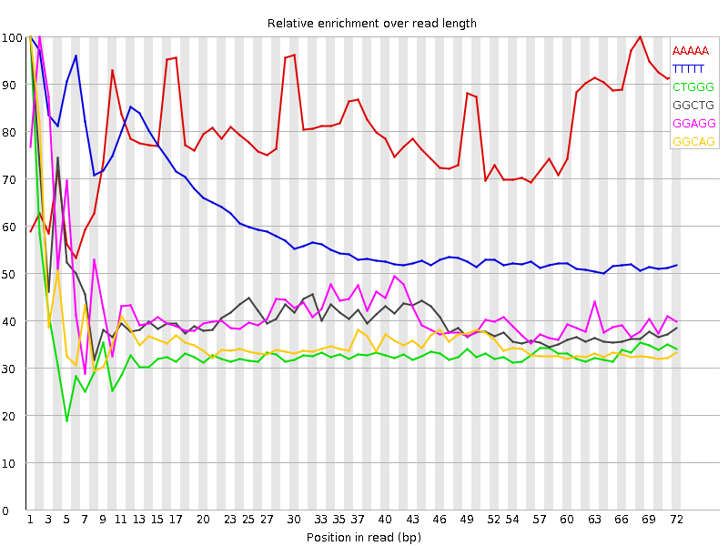

![[OK]](Icons/tick.png) Basic Statistics
Basic Statistics
| Measure | Value |
|---|---|
| Filename | SRR315298_1.fastq |
| File type | Conventional base calls |
| Encoding | Sanger / Illumina 1.9 |
| Total Sequences | 38980680 |
| Filtered Sequences | 0 |
| Sequence length | 76 |
| %GC | 51 |
Per base sequence quality

Per sequence quality scores

![[FAIL]](Icons/error.png) Per base sequence content
Per base sequence content

Per base GC content

![[WARN]](Icons/warning.png) Per sequence GC content
Per sequence GC content

Per base N content

Sequence Length Distribution

Sequence Duplication Levels

Overrepresented sequences
No overrepresented sequences
Kmer Content

| Sequence | Count | Obs/Exp Overall | Obs/Exp Max | Max Obs/Exp Position |
|---|---|---|---|---|
| AAAAA | 10444085 | 3.699749 | 4.6747026 | 68 |
| TTTTT | 6485665 | 3.2699945 | 5.3354125 | 1 |
| CTGGG | 7471795 | 2.4327526 | 7.262658 | 1 |
| GGCTG | 7104385 | 2.3131268 | 5.5869308 | 1 |
| GGAGG | 7983745 | 2.2557626 | 5.2524986 | 2 |
| GGCAG | 7418975 | 2.250913 | 6.1946826 | 1 |
| GCTGG | 6906265 | 2.2486205 | 5.885198 | 1 |
| GGGAG | 6981915 | 1.9727011 | 6.3404884 | 1 |
| TGGGG | 6203285 | 1.8809038 | 6.2737923 | 1 |
| GGGCA | 5687940 | 1.725718 | 5.3849626 | 1 |
| GGGGG | 6395240 | 1.7076143 | 8.93686 | 1 |
| GGGGA | 5612950 | 1.5859077 | 8.622052 | 1 |
| GTGGG | 5189780 | 1.573598 | 8.382859 | 1 |
| GGGGC | 5427970 | 1.5563183 | 5.4753475 | 2 |
| GGGTG | 5121115 | 1.5527779 | 5.452511 | 2 |
| GGGGT | 4500880 | 1.3647159 | 6.7031345 | 1 |
| GTGGA | 3672970 | 1.1784633 | 5.0655727 | 1 |
| CGGGG | 3256470 | 0.9337015 | 6.7554727 | 1 |